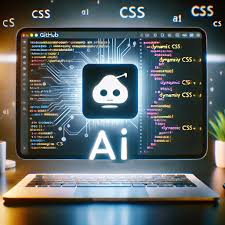

Technical Interests
Machine Learning and AI
Machine learning has always intrigued me, particularly its potential to replicate human intelligence. I’ve been delving into a range of algorithms and their ability to solve real-world problems through data analysis. From supervised learning techniques like linear regression, decision trees, and support vector machines, to unsupervised methods like K-means clustering and principal component analysis, each algorithm has its unique role in extracting meaningful insights from data. I’ve also explored reinforcement learning, where agents learn through interaction with their environment, and deep learning, which mimics human cognition for tasks like image recognition and language processing. The application of machine learning spans across diverse industries, including healthcare for disease prediction, finance for fraud detection, retail for personalized recommendations, and autonomous vehicles for self-driving technology. As I continue learning, I am fascinated by how these algorithms are transforming industries and solving complex challenges.
Web Development

I enjoy building websites and developing interactive user interfaces, combining creativity with functionality. For me, it's important to create websites that are not only visually appealing but also intuitive and user-friendly. I focus on designing responsive layouts and seamless navigation to ensure a great user experience across all devices. Whether it's choosing the right color schemes, typography, or creating engaging animations, I strive to make each project aesthetically pleasing while meeting the needs of the users. My approach to web development involves using modern tools and technologies like HTML, CSS, JavaScript, and frameworks such as React or Vue.js to bring ideas to life. I believe that a well-designed website should not only look good but also be efficient and easy to navigate, ensuring that users have a smooth and enjoyable experience.